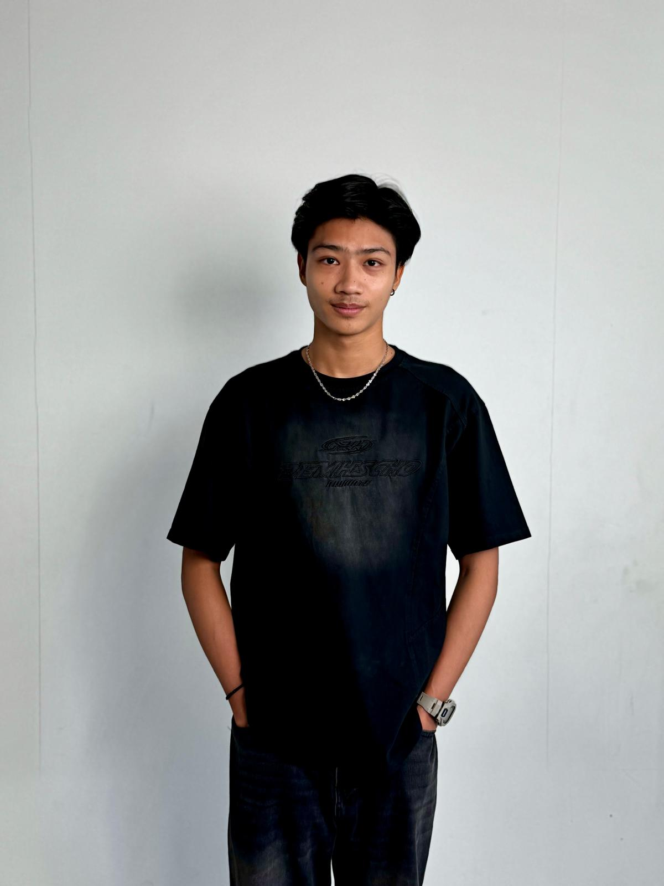

Singapore Polytechnic (2023- Current)
Diploma in Information Technology
IELTS Results(2022)
Overall Band Score 6.5

Welcome to my portfolio! I'm a second-year IT student at Singapore Polytechnic
Diploma in Information Technology
Overall Band Score 6.5
Here are the projects completed for my studies:
Singapore Environmental Analysis: Utilized Python basics, NumPy, and Matplotlib to analyze environmental data in Singapore, focusing on rainfall and weather conditions.
HDB Flat Price Analysis: Employed NumPy, Matplotlib, Pandas, and Seaborn for data analysis of Singapore HDB flat prices. Investigated factors influencing popular flat types and their respective areas.
Developed a web app to analyze and filter educational and employment data from a CSV dataset. Utilized JavaScript, HTML, and CSS to create dynamic filtering by year, university, school, and degree, along with detailed insights into employment rates and salaries. Demonstrates skills in web development and data processing.
Conducted data analysis using Excel to explore Singapore HDB sales transactions. Focused on analyzing sale prices, salespersons, and buyers to identify trends and patterns in the real estate market. The analysis provided valuable insights into transaction behaviors and pricing dynamics.
Developed a store website with direct database integration using PostgreSQL. Focused on front-end design with HTML, CSS, and JavaScript, while implementing tables, functions, and procedures to manage customer interactions and product management. Features include adding and managing favorite products, providing a seamless user experience with efficient data handling.
Designed and implemented a Java-based application for managing student modules and statistics. Utilized Java skills and GUI components to develop a system that handles CRUD operations for student data and module management. The application provides functionalities for creating, reading, updating, and deleting student records, as well as generating and analyzing statistical data.
Created an adventure game utilizing Java for core logic and HTML, CSS, and JavaScript for the front-end. Integrated APIs for CRUD operations with Express.js and managed backend data using MySQL. Utilized Postman for testing and ensuring the robustness of the API endpoints. This project showcases expertise in full-stack development, combining game design with comprehensive backend and frontend technologies.
Listed are the part-time and volunteer jobs I undertook while studying:

Currently working part-time as a food server at Singapore Swimming Club since June 2023. Developed strong skills in team management, communication, teamwork, public speaking, and problem-solving while providing excellent customer service, coordinating with kitchen staff, and managing orders and payments in a busy restaurant environment.
Volunteered at Computer Training Centre from May 2021 to December 2022, teaching Microsoft Word and Excel to improve community digital literacy and productivity. Planned and conducted seminars, provided educational materials, and offered practical support. Helped individuals enhance their employability and daily productivity through personalized assistance and technical explanations. This role allowed me to develop my own skills and make a positive impact on my community.
Phone: +6583868152